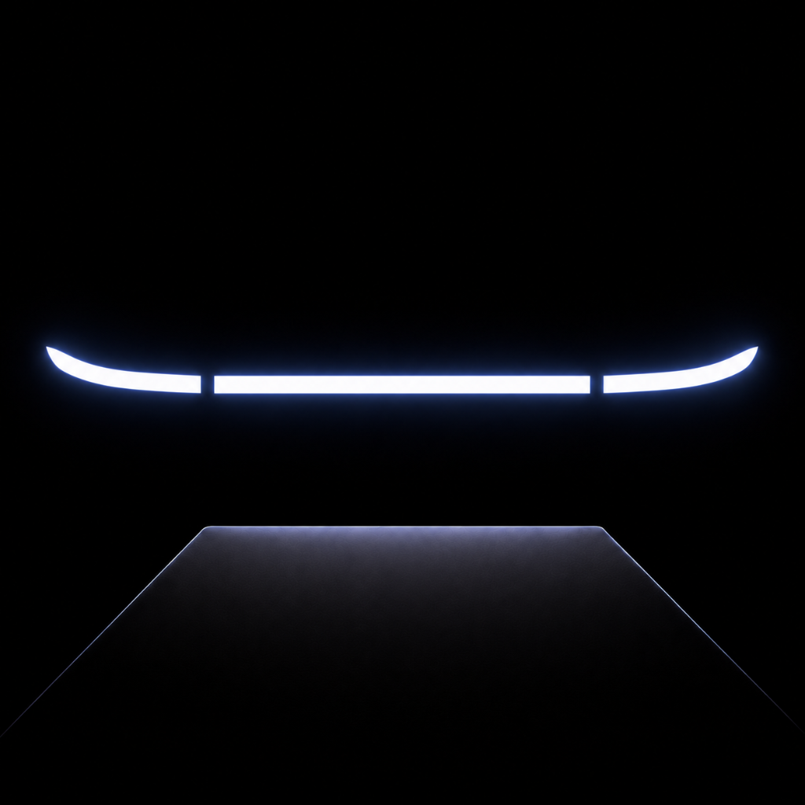
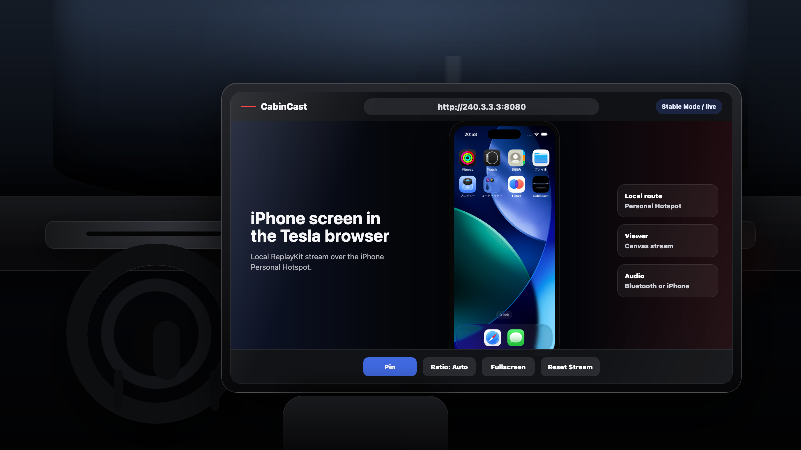
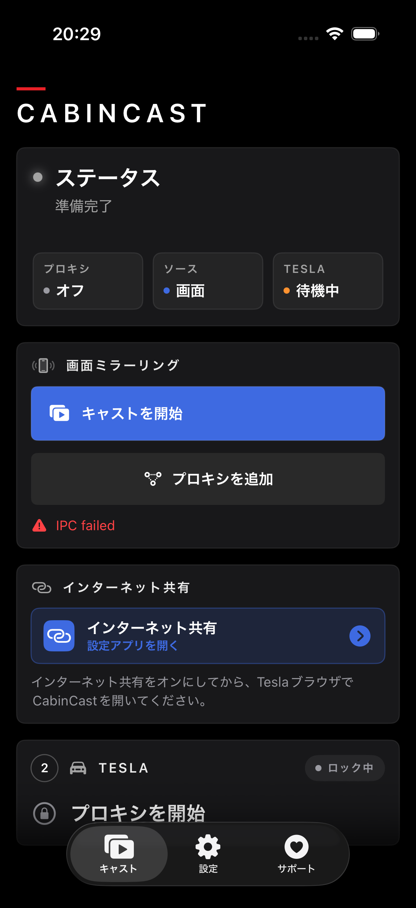

TeslaをiPhoneのホットスポットに接続
TeslaのWi-Fi設定から、iPhoneのパーソナルホットスポットを選びます。

CabinCast

必要なのはiPhoneとTeslaだけ。接続はたったの3ステップです。
TeslaのWi-Fi設定から、iPhoneのパーソナルホットスポットを選びます。
アプリを開き、キャスト開始をタップします。iOSの確認が出たら画面共有を許可します。
Teslaのブラウザを開くと、iPhoneの画面が大きく表示されます。
CabinCastは誰でも無料で使えます。サポーターパックは開発を支えながら、 PRO Codec、高画質モード、詳細設定などの検証中の機能を使えるようにします。
CabinCastは、パーソナルホットスポット経由で iPhoneの画面をTeslaに表示します。 画面共有はインターネット経由ではないため、ホットスポット接続後は携帯データ通信に依存しません。
iPhoneとTeslaは、パーソナルホットスポット経由でつながります。
画面共有に、携帯キャリアのデータ通信は必要ありません。
CabinCastは表示専用です。操作はiPhone側で行います。保護された動画は黒く表示される場合があります。
問い合わせ前に確認しやすい、よくある質問です。
はい。CabinCastはiPhoneからTeslaへの画面共有に無料で使えます。
いいえ。iPhoneはパーソナルホットスポット経由でTeslaに画面を表示します。
Teslaがホットスポットに接続済みであれば、携帯電波がない場所でも使い続けられます。
ホットスポットの状態、Teslaブラウザ、iPhoneの発熱、選んだ画質オプションが影響します。
応援は開発の継続に使われ、新しい検証中の機能も使えるようになります。
はい。iPhoneが熱くなる場合は、低めの画質オプションの方が安定することがあります。
いいえ。CabinCastは画面を表示するだけです。操作はiPhone側で行います。
ホットスポット確認、フルスクリーン、既知の制限をまとめています。